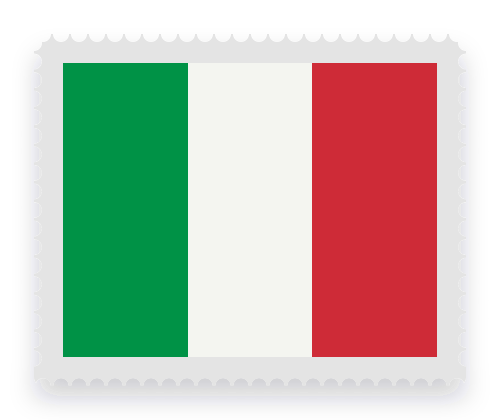

Ciudadanía italiana por vía consular, para hijos y nietos de italianos
Si tu padre, madre, abuelo o abuela tiene, o tenía al morir, solo la ciudadanía italiana, el reconocimiento se tramita ante el consulado italiano que te corresponde (Legge 74/2025). Los requisitos cambian según cada caso y cada consulado: te decimos exactamente qué te piden y armamos la carpeta completa.

Depende de quién sea tu ascendiente italiano
La línea se cuenta desde vos hasta la persona con ciudadanía italiana.
- Padre, madre, abuelo o abuela con ciudadanía exclusivamente italiana: reconocimiento por vía consular.
- Si esa persona tuvo otra ciudadanía: hay que revisar el caso. La ley también admite que tu padre o madre, ya siendo italiano/a, haya residido 2 años seguidos en Italia antes de tu nacimiento.
- Bisabuelo o anterior: solo quedan a salvo las solicitudes, turnos asignados o demandas anteriores al 27/03/2025. Ver qué pasa con el juicio
- ¿No sabés en qué generación está? Hacemos investigación genealógica completa: registros civiles, libros físicos, archivos y cementerios, hasta reconstruir la línea.
Del turno al pasaporte
Cada consulado tiene sus propios requisitos. Los revisamos para tu caso antes de armar nada.
Gestión del turno
Nos ocupamos del turno consular para presentar tu carpeta.
Investigación genealógica
Registros civiles, libros físicos, archivos y cementerios, en Argentina y en Italia.
Documentación en condiciones
Traducciones, apostillas y revisión de cada documento según lo que pide tu consulado.
AIRE y pasaporte
Una vez reconocida la ciudadanía, gestionamos la inscripción en el AIRE y el pasaporte.
También te acompañamos con
- Ciudadanía por matrimonio: 3 años de matrimonio (2 si viven en Italia, la mitad con hijos) y certificado B1.
- Carta de identidad electrónica (CIE): turno en Prenot@mi y documentación lista para el consulado.
- Turnos en Prenot@mi para pasaporte, CIE y demás servicios consulares.
- Gestiones en Fast It: inscripción en el AIRE, cambio de domicilio y código fiscal.
- Inscripción de menores ante el consulado.
- Actualización de domicilio y estado civil. No declararlos, igual que no inscribirte en el AIRE, puede costarte hasta €5.000 en multas.
- Traducciones, asseverazioni y doble apostilla.
- Dichiarazione di valore de tu título, para estudiar o tramitar equivalencias en Italia.
Un trámite, cuatro etapas claras
- 01
Consulta inicial
Revisamos tu línea y confirmamos que tu caso va por vía consular.
- 02
Relevamiento documental
Búsqueda y verificación de actas, traducciones y apostillas.
- 03
Turno y presentación
Gestionamos el turno y preparamos la carpeta según tu consulado.
- 04
Después del reconocimiento
AIRE, pasaporte e inscripción de tus hijos, si corresponde.
Dudas frecuentes sobre la vía consular
¿Qué requisitos me van a pedir?
Depende de tu caso y del consulado. En la consulta inicial revisamos tu línea y te decimos exactamente qué documentación necesitás.
Mi ascendiente italiano es mi bisabuelo, ¿puedo ir por consulado?
No, salvo que hayas presentado la solicitud o tuvieras turno asignado antes de las 23:59 (hora de Roma) del 27/03/2025. La Legge 74/2025 (Decreto Tajani) exige un padre, madre, abuelo o abuela con ciudadanía exclusivamente italiana, y en 2026 la Corte Constitucional confirmó la reforma (sentencia 63/2026).
¿Qué pasa después de que me reconocen la ciudadanía?
Tenés que inscribirte en el AIRE, el registro de italianos residentes en el exterior, y con eso podés tramitar el pasaporte. Te acompañamos en los dos pasos.
¿Qué cambia en 2029?
Desde el 1 de enero de 2029, las solicitudes de reconocimiento presentadas desde el exterior dejan de hacerse en los consulados y pasan a una oficina central del Ministerio de Relaciones Exteriores en Roma, con documentación original en papel enviada por correo. Los consulados conservan funciones más limitadas.
¿Puedo sacar la carta de identidad electrónica (CIE) desde Argentina?
Sí, si estás inscripto en el AIRE. El turno se pide solo por Prenot@mi y hay que presentarse en persona en el consulado para las huellas y la firma; la tarjeta llega por correo. Para mayores de edad vale 10 años.
¿Qué es Fast It y cómo entro?
Es el portal de servicios consulares para italianos residentes en el exterior: inscripción en el AIRE, cambio de domicilio, código fiscal y consulta de tu ficha consular. Hasta el 31/12/2028 se puede entrar con usuario y contraseña, y quien ya está registrado puede usarlos hasta el 31/03/2029; después hará falta SPID o CIE.
¿Trabajan con cualquier consulado?
Sí. Gestionamos trámites en consulados italianos de toda Argentina y del mundo, con atención 100% remota.
No hay peor trámite que el que no se realiza.
Delegalo y empezá a sacártelo de encima. Te decimos qué documentación necesitás según tu caso.
Armá tu mensaje antes de escribirnos
Elegí el trámite y completá lo que sepas. El texto se escribe solo y lo revisás en WhatsApp antes de enviarlo.
Hola, Migratio. Quiero hacer una consulta.
El mensaje se arma en tu dispositivo y se abre en WhatsApp para que lo revises antes de enviarlo.